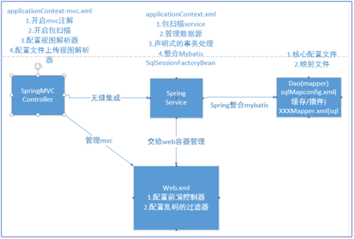

SSM框架整合
本文于792天之前发表，文中内容可能已经过时。
SSM框架整合
SSM架构设计图
导包
xml文件配置
SSM架构设计图
1
2
3
4
5
6
7
81.SpringMVC框架控制Controller层其中需要配置注解标签/包扫描/视图
解析器
2.Spring框架控制Service层其中需要配置包扫描(项目中全部的框架包)
/数据源/声明式事务处理
3.Mybatis框架控制Mapper层(dao)需要配置sqlMapConfig.xml
XXXMapper.xml文件
4.tomcat容器整合通过web.xml容器管理Spring框架.其中Spring
框架整合Mybatis框架
导包
<dependencies>
<dependency>
<groupId>org.springframework</groupId>
<artifactId>spring-webmvc</artifactId>
<version>3.2.8.RELEASE</version>
</dependency>
<dependency>
<groupId>com.fasterxml.jackson.core</groupId>
<artifactId>jackson-databind</artifactId>
<version>2.5.0</version>
</dependency>
<dependency>
<groupId>com.fasterxml.jackson.core</groupId>
<artifactId>jackson-annotations</artifactId>
<version>2.5.0</version>
</dependency>
<dependency>
<groupId>org.mybatis</groupId>
<artifactId>mybatis</artifactId>
<version>3.2.8</version>
</dependency>
<dependency>
<groupId>mysql</groupId>
<artifactId>mysql-connector-java</artifactId>
<version>5.1.2</version>
</dependency>
<dependency>
<groupId>com.alibaba</groupId>
<artifactId>druid</artifactId>
<version>1.0.23</version>
</dependency>
<dependency>
<groupId>org.mybatis</groupId>
<artifactId>mybatis-spring</artifactId>
<version>1.2.4</version>
</dependency>
<dependency>
<groupId>org.springframework</groupId>
<artifactId>spring-jdbc</artifactId>
<version>3.2.8.RELEASE</version>
</dependency>
<dependency>
<groupId>junit</groupId>
<artifactId>junit</artifactId>
<version>4.12</version>
</dependency>
<dependency>
<groupId>commons-codec</groupId>
<artifactId>commons-codec</artifactId>
<version>1.10</version>
</dependency>
<dependency>
<groupId>org.aspectj</groupId>
<artifactId>aspectjweaver</artifactId>
<version>1.8.0</version>
</dependency>
<dependency>
<groupId>org.aspectj</groupId>
<artifactId>aspectjtools</artifactId>
<version>1.8.0</version>
</dependency>
<dependency>
<groupId>org.aspectj</groupId>
<artifactId>aspectjrt</artifactId>
<version>1.8.0</version>
</dependency>
<dependency>
<groupId>org.apache.poi</groupId>
<artifactId>poi</artifactId>
<version>3.12</version>
</dependency>
<dependency>
<groupId>commons-fileupload</groupId>
<artifactId>commons-fileupload</artifactId>
<version>1.3.1</version>
</dependency>
</dependencies>
SpringMVC配置
<?xml version="1.0" encoding="UTF-8"?>
<beansxmlns="http://www.springframework.org/schema/beans"
xmlns:xsi="http://www.w3.org/2001/XMLSchema-instance"
xmlns:context="http://www.springframework.org/schema/context"
xmlns:mvc="http://www.springframework.org/schema/mvc"
xsi:schemaLocation="
http://www.springframework.org/schema/beans
http://www.springframework.org/schema/beans/spring-beans.xsd
http://www.springframework.org/schema/mvc
http://www.springframework.org/schema/mvc/spring-mvc-4.0.xsd
http://www.springframework.org/schema/context
http://www.springframework.org/schema/context/spring-context.xsd">
<!--开启mvc的注解形式 -->
<mvc:annotation-driven/>
<!--开启包扫描 controller -->
<context:component-scan
base-package="com.jt.manage.controller"/>
<!--配置视图解析器内部资源视图解析器
配置前缀和后缀
前缀:/WEB-INF/views/
后缀:.jsp
注意"/WEB-INF" 中的 "/"不能省略
否则是相对路径
-->
<bean id="internalResource" class="org.springframework.web.servlet.view.InternalResourceViewResolver">
<property name="prefix" value="/WEB-INF/views/"/>
<property name="suffix" value=".jsp"/>
</bean>
</beans>
Web.xml配置
<!--1.配置前端控制器servletcontextConfigLocation -->
<servlet>
<servlet-name>springmvc</servlet-name>
<servlet-class>org.springframework.web.servlet.DispatcherServlet</servlet-class>
<init-param>
<param-name>contextConfigLocation</param-name>
<param-value>classpath:/spring/applicationContext-mvc.xml</param-value>
</init-param>
</servlet>
<!--编辑拦截的路径 /只拦截请求的前缀至于
请求的后缀是什么一律忽略
/hello.action
/hello.do
/hello
规定如果写 / 会拦截请求和静态资源(jscss图片)
/ 不拦截JSP 目的为了RestFul传参
-->
<servlet-mapping>
<servlet-name>springmvc</servlet-name>
<url-pattern>/</url-pattern>
</servlet-mapping>
<!--配置POST乱码的过滤器 -->
<filter>
<filter-name>characterEncoding</filter-name>
<filter-class>
org.springframework.web.filter.CharacterEncodingFilter</filter-class>
<init-param>
<param-name>encoding</param-name>
<param-value>UTF-8</param-value>
</init-param>
</filter>
<filter-mapping>
<filter-name>characterEncoding</filter-name>
<url-pattern>/*</url-pattern>
</filter-mapping>
Spring的配置文件
<beansxmlns="http://www.springframework.org/schema/beans"
xmlns:context="http://www.springframework.org/schema/context"
xmlns:aop="http://www.springframework.org/schema/aop"
xmlns:tx="http://www.springframework.org/schema/tx"
xmlns:util="http://www.springframework.org/schema/util"
xmlns:xsi="http://www.w3.org/2001/XMLSchema-instance"
xsi:schemaLocation="
http://www.springframework.org/schema/beans http://www.springframework.org/schema/beans/spring-beans-4.0.xsd
http://www.springframework.org/schema/context http://www.springframework.org/schema/context/spring-context-4.0.xsd
http://www.springframework.org/schema/aop http://www.springframework.org/schema/aop/spring-aop-4.0.xsd
http://www.springframework.org/schema/tx http://www.springframework.org/schema/tx/spring-tx-4.0.xsd
http://www.springframework.org/schema/util http://www.springframework.org/schema/util/spring-util-4.0.xsd">
<!--添加Spring的配置文件
1.开启包扫描
2配置数据源
3添加声明式事务处理
-->
<context:component-scanbase-package="com.jt"/>
<!--引入外部配置文件作用:可以引入多个properties文件-->
<beanid="propertyPlaceholder"
class=”org.springframework.beans.factory.config.PropertyPlaceholderConfigurer”>
<propertyname=”locations”>
<!--配置连接池 -->
<beanid="dataSource" class="com.alibaba.druid.pool.DruidDataSource" destroy-method="close">
<property name="driverClassName" value="${jdbc.driver}" />
<property name="url" value="${jdbc.url}" />
<property name="username" value="${jdbc.username}" />
<property name="password" value="${jdbc.password}" />
<!-- 初始化连接大小 -->
<property name="initialSize" value="${jdbc.initialSize}" />
<!-- 连接池最大数量 -->
<property name="maxActive" value="${jdbc.maxActive}" />
<!-- 连接池最小空闲 -->
<property name="minIdle" value="${jdbc.minIdle}" />
<!-- 获取连接最大等待时间 -->
<property name="maxWait" value="${jdbc.maxWait}" />
</bean>
<!--声明式事务处理
<tx:annotation-driven/>优点配置简单缺点:每个方法都必须添加注解
-->
<!--1. 配置事务管理器
事务控制器如果控制事务必须获取数据源否则不能拦截
提交事务回滚事务
-->
<beanid="transactionManager"
class="org.springframework.jdbc.datasource.DataSourceTransactionManager">
<propertyname="dataSource" ref="dataSource"></property>
</bean>
<!--2.配置事务通知 AOP
属性介绍:
propagation="REQUIRED" 必须添加一个事务
propagation="SUPPORTS" 表示事务支持
-->
<tx:adviceid="txAdvice" transaction-manager="transactionManager">
<!--定义事务策略 -->
<tx:attributes>
<tx:methodname="save*" propagation="REQUIRED"/>
<tx:methodname="delete*" propagation="REQUIRED"/>
<tx:methodname="update*" propagation="REQUIRED"/>
<tx:methodname="find*" propagation="SUPPORTS" read-only="true"/>
<tx:methodname="*" propagation="SUPPORTS" read-only="true"/>
</tx:attributes>
</tx:advice>
<!--
3.生成事务切面
execution(返回值类型包名.类名.方法名(参数列表))
-->
<aop:config>
<aop:pointcut
expression="execution(* com.jt.manage.service..*.*(..))" id="pc"/>
<aop:advisoradvice-ref="txAdvice" pointcut-ref="pc"/>
</aop:config>
</beans>
Spring管理Mybatis
编辑mybatis-config配置文件
<configuration> <!--作用: 1.添加数据源 2.可以配置缓存 一级缓存: 默认开启在sqlSession内实现数据共享 二级缓存: 默认关闭的要求对象序列化添加二级缓存标签<cache> 在sqlSessionFactory内实现数据共享 3.添加插件(通用Mapper,分页插件) 4.Mybatis中的自动映射 字段对象 id id可以映射 name name 可以映射 user_ageuser_age默认不能映射 userAge经过驼峰映射可以实现自动的映射 原理: mybatis在进行对象映射时,会自动的将"_"去掉,之后 首字母大写,实现与对象属性的自动映射. 注意事项: 如果开启了驼峰映射规则,则必须满足要求 (映射后的名称与属性一致),否则不能映射 --> <settings> <!--开启驼峰自动映射 --> <setting name="mapUnderscoreToCamelCase"value="true"/> <!--二级缓存的总开关，被redis替代 --> <setting name="cacheEnabled"value="false"/> </settings>编辑Mybatis的映射文件
<?xml version="1.0" encoding="UTF-8"?> <!DOCTYPEmapper PUBLIC"-//mybatis.org//DTD Mapper 3.0//EN" "http://mybatis.org/dtd/mybatis-3-mapper.dtd"> <!--namespace作用??? 1.是映射文件的唯一标识 2.应该与接口的路径保持一致 3.根据操作的数据表的不同,生成不同的namespace 一个表对应的一个XXXMapper接口 --> <mapper namespace="com.jt.manage.mapper.UserMapper"> <!--查询user表的全部数据 要求:id应该和接口方法名称保持一致 --> <select id="findAll"resultType="User"> select * from user </select> </mapper>编辑application-mybatis配置文件
<?xml version="1.0" encoding="UTF-8"?> <beansxmlns="http://www.springframework.org/schema/beans" xmlns:xsi="http://www.w3.org/2001/XMLSchema-instance" xmlns:context="http://www.springframework.org/schema/context" xmlns:mvc="http://www.springframework.org/schema/mvc" xsi:schemaLocation=" http://www.springframework.org/schema/beans http://www.springframework.org/schema/beans/spring-beans.xsd http://www.springframework.org/schema/mvc http://www.springframework.org/schema/mvc/spring-mvc-4.0.xsd http://www.springframework.org/schema/context http://www.springframework.org/schema/context/spring-context.xsd"> <!--spring管理Mybatis 1.spring整合sqlSessionFactoryBean 2.添加数据源 3.添加Mybatis自己的配置文件 1.sqlMapConfig.xml 核心 2.XXXMapper.xml 映射文件(sql) 4.为Mapper接口生成代理对象 JDK的动态代理 被代理者必须有接口 CGLib代理对象没有要求 private Resource configLocation; private Resource[] mapperLocations; --> <bean id="sqlSessionFactory" class="org.mybatis.spring.SqlSessionFactoryBean"> <property name="dataSource" ref="dataSource"/> <property name="configLocation" value="classpath:/mybatis/mybatis-config.xml"/> <property name="mapperLocations" value="classpath:/mybatis/mappers/*.xml"/> <!--配置别名包 --> <property name="typeAliasesPackage" value="com.jt.manage.pojo"/> </bean> <!--为Mapper接口生成代理对象 原理:Spring为Mybatis的Mapper接口生成代理对象, 由于Mapper的接口众多,Spring通过包扫描的方式,为包中的 全部接口通过JDK的动态代理方式创建代理对象.将对象保存到 Spring容器中,如果需要动态注入时实现赋值. --> <bean class="org.mybatis.spring.mapper.MapperScannerConfigurer"> <property name="basePackage" value="com.jt.manage.mapper"/> </bean> </beans>Web容器整合Spring容器
<?xml version="1.0" encoding="UTF-8"?><web-appxmlns:xsi=”http://www.w3.org/2001/XMLSchema-instance"
xmlns="http://java.sun.com/xml/ns/javaee" xsi:schemaLocation="http://java.sun.com/xml/ns/javaee http://java.sun.com/xml/ns/javaee/web-app_2_5.xsd" id="jt-manage" version="2.5"> <display-name>jt-manage</display-name> <!--1.配置前端控制器servletcontextConfigLocation --> <servlet> <servlet-name>springmvc</servlet-name> <servlet-class>org.springframework.web.servlet.DispatcherServlet</servlet-class> <init-param> <param-name>contextConfigLocation</param-name> <param-value>classpath:/spring/applicationContext*.xml</param-value> </init-param> </servlet> <!--编辑拦截的路径 /只拦截请求的前缀至于 请求的后缀是什么一律忽略 /hello.action /hello.do /hello 规定如果写 / 会拦截请求和静态资源(jscss图片) / 不拦截JSP 目的为了RestFul传参 --> <servlet-mapping> <servlet-name>springmvc</servlet-name> <url-pattern>/</url-pattern> </servlet-mapping> <!--配置POST乱码的过滤器 --> <filter> <filter-name>characterEncoding</filter-name> <filter-class>org.springframework.web.filter.CharacterEncodingFilter</filter-class> <init-param> <param-name>encoding</param-name> <param-value>UTF-8</param-value> </init-param> </filter> <filter-mapping> <filter-name>characterEncoding</filter-name> <url-pattern>/*</url-pattern> </filter-mapping> <welcome-file-list> <welcome-file>index.jsp</welcome-file> </welcome-file-list>
赏
 支付宝打赏
支付宝打赏
 微信打赏
微信打赏
支付宝打赏
微信打赏
如果文章对你有帮助，欢迎点击上方按钮打赏作者